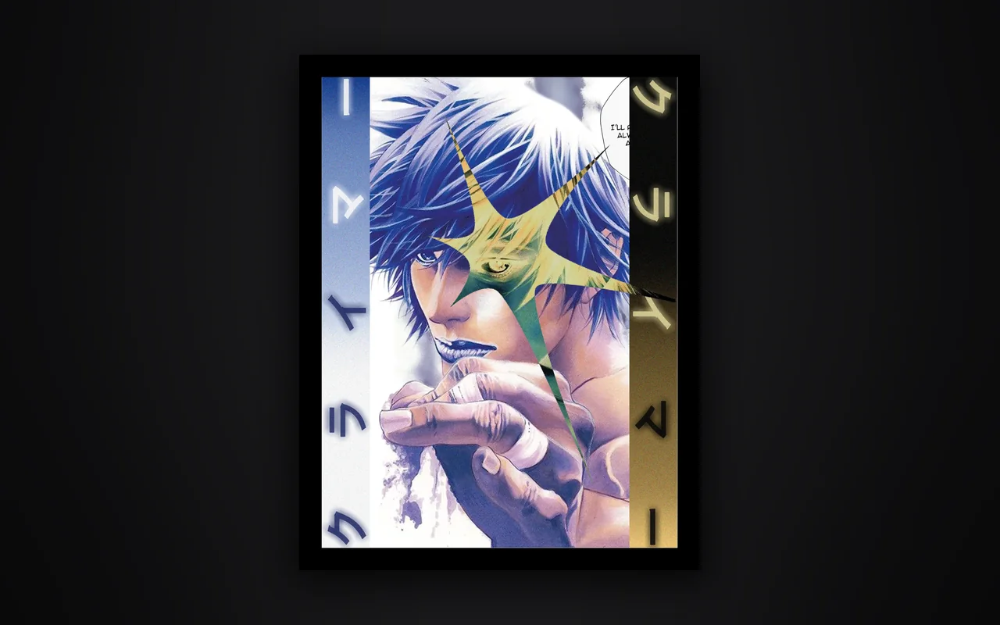

Accueil
Profil
Projets
Portrait
Contact
← Projets
/
Projet perso
/
Vogue × JoJo
Vogue × JoJo
Photoshop
Projet libre
Couverture
Manga × mode
11
La couverture
Survole pour la loupe · clic = plein écran
Projets perso
2 fan-arts · 1 même signature
Ascension
Bleu & or
Vogue × JoJo
Fausse couverture
Palette
Clic pour copier
#000000
Noir
#3a3a3c
Graphite
#9a9a9e
Argent
#e4e4e6
Chrome
#ffffff
Blanc

← Projet précédent
Ascension
Projet suivant →
Malt Sauvage
Astuce :
←
→
pour passer d'un projet à l'autre